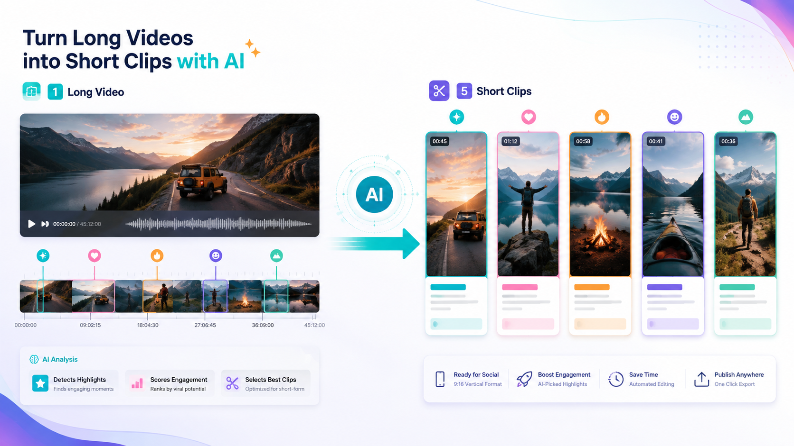

Промтзилла
Из длинного видео редко нужно резать всё подряд: лучше найти моменты с конфликтом, пользой, эмоцией или самостоятельной мыслью.

Пошаговая инструкция
- 1Загрузи длинное видео или расшифровку.
- 2Попроси найти 5-10 самостоятельных фрагментов.
- 3Укажи длительность клипов: 15, 30 или 60 секунд.
- 4Попроси хук, субтитры и описание для каждого фрагмента.
- 5Проверь, что мысль понятна без контекста полного ролика.
Какой результат просить
Лучший результат — таблица с таймкодом начала и конца, темой клипа, хуком, подписью и идеей кадрирования. Для старта можно использовать Study24 AI: добавь исходник, цель и ограничения, а затем попроси вариант для публикации.
Промт
RU
Найди короткие клипы в этом длинном видео. Нужно: — выбрать 5-10 сильных фрагментов; — для каждого указать начало и конец; — объяснить, почему фрагмент может удержать внимание; — предложить хук для первых 2 секунд; — сделать короткую подпись; — предложить формат кадрирования 9:16; — добавить текст субтитров для клипа. Выбирай фрагменты, которые понятны без просмотра полного видео.
EN
Find short clips in this long video. Requirements: — choose 5-10 strong fragments; — provide start and end timestamps for each one; — explain why the fragment can hold attention; — suggest a hook for the first 2 seconds; — create a short caption; — suggest 9:16 framing; — add subtitle text for the clip. Choose fragments that make sense without watching the full video.
Важно
Короткий клип не должен искажать смысл полного видео. Особенно аккуратно режь спорные цитаты и экспертные выводы.
Теги